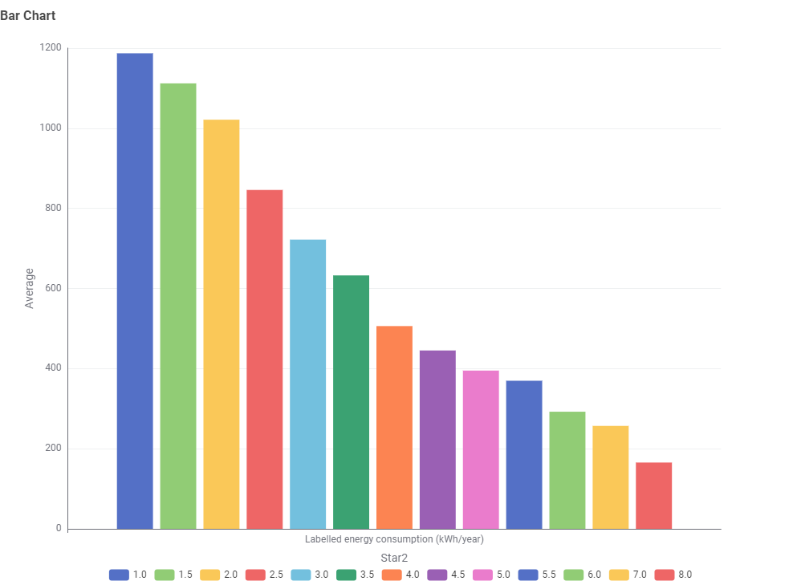

Issue
Throughout the year, more and more people are aware about TV Energy Consumption as TV are being introduce with newer tech and somehow TV has different energy consumption based on their features.
Demonstration Issue
Prepare data visualisation about energy efficient televisions for consumer, energy consumption trends for policy makers and regulators, energy efficient in consumer electronics for reseachers and overall about how television energy consumption varies across models, sizes, and technologies, and how these factors influence overall energy usage. The goal of this data visualisation is to let viewers understand about how energy consumption varies between television models, the relationship between screen size and power consumption, how energy efficiency ratings impact energy usage and trends that may help consumers choose more energy-efficient televisions.
Ideas for overcoming issue
In this storyboard, charts need to be displayed for the audiences to let them have better understanding about the issue they have hence Knime will be used for the production of these charts.
Explanation based on data visualisation
Same brand can come out with different TV models but does these model have similar energy consumption or different?

Based on table the different models under the same brand can have similar and different energy comsumption but the factor isn't enough to understand how TV affect the energy consumption.
Screensize might be one of the factor that affect the energy consumption as larger TV usually consume more energy. Thus, data visualisation needed to prove this assumption.

Based on the bar chart it prove that the larger the TV screensize the higher the energy consumption but it wasnt enough as audience doesn't know the actual screensize category even though the screensize is displayed to them.
To solve the problem we added screensize category to categorized the screensize under large, medium and small.

Based on the bar chart audience can easily understand how screensize category affect the energy consumption.
TV usually implemented different types of tech such as LCD, LCD (LED) and OLED. But does the types of tech affect the energy consumption? Let find out from the data visualisation.

From the observation of the bar chart the type of tech under small screensize category show a huge different compared to medium and large screensize category, which mean type of tech show higher prority as a factor in small screensize category compared to medium and large screensize category.
Its also important to learn about the trend of the company about which TV has the most production.

Based on the scatterplot the TV with screensize around the medium produced the most by company. Where we can assume that TV with average energy consumption is more popular among the consumers.
Star rating are assigned to different types of TV to state their energy efficiency thus its important to understand their relationship before buying TV.

From the bar chart it clearly show that the lower the star rating the higher the energy consumption on a TV.
Recommendation
It is recommended to get feedback from the audience about the storyboard produce to make changes on the content and have a better storyboard.
Conclusion
In conclusion, one or two feature isn't enough to get a good insight on the issue or problem that need to be solved and analysed by the audience.